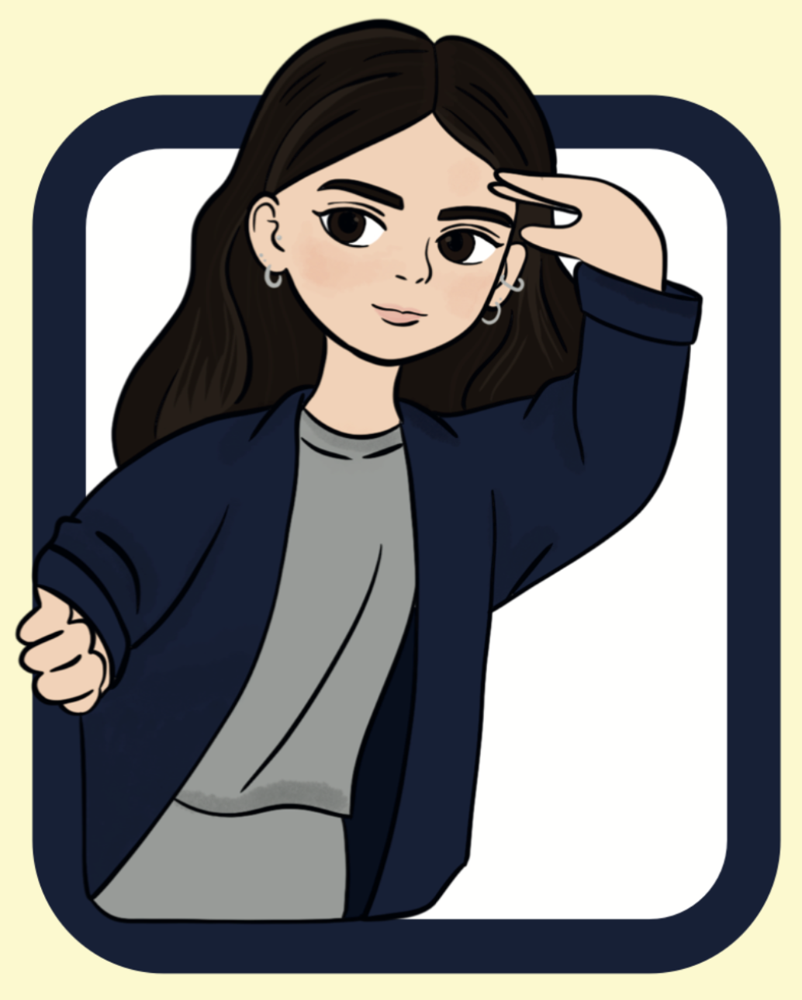
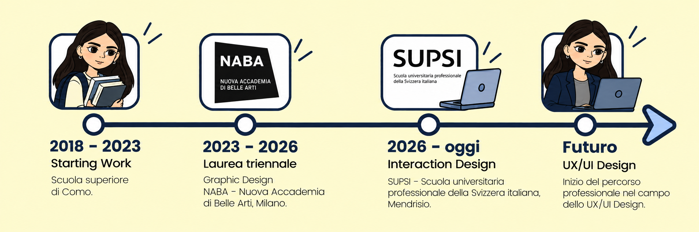

About me

Percorso scolastico
Ciao! Sono una Graphic Designer e Art Director, laureata a luglio 2026 presso NABA, Nuova Accademia di Belle Arti. Il mio percorso nel mondo creativo è iniziato presto: tra i 15 e i 18 anni ho avuto l'opportunità di fare esperienze di stage e apprendistato, che mi hanno permesso di avvicinarmi al mondo del lavoro e sviluppare competenze pratiche. Durante la mia formazione ho approfondito l'utilizzo dei principali software Adobe Creative Cloude conseguito le certificazioni EIPASS ed EIPASS Web. Attualmente mi sto specializzando in Interaction Design, in SUPSI,con un interesse particolare per il mondo UX/UI, dove creatività, funzionalità ed esperienza utente si incontrano. Mi piace esplorare nuove soluzioni visive, sperimentare e trasformare le idee in esperienze digitali intuitive, coinvolgenti e curate nei dettagli.
